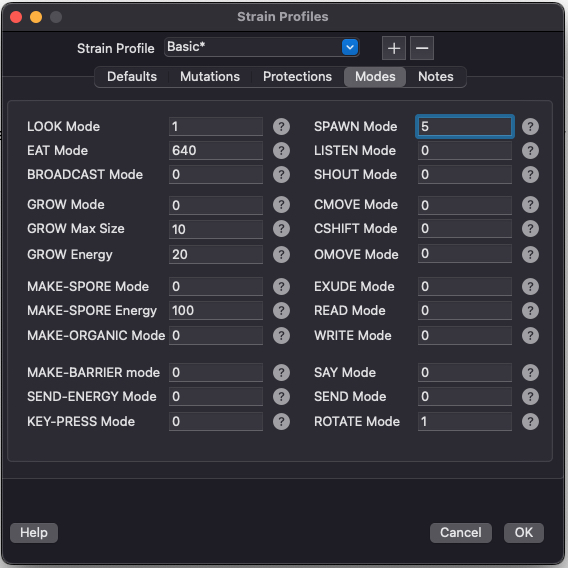

VOLVE 5.0
VOLVE 5.0
Instruction Modes
Instruction Modes are on/off flags associated with a particular instruction. Here are all the instruction modes in one handy place.
 EAT MODE
| BIT | MASK | Meaning when bit is 0 | Meaning when bit is 1 |
| 0 | 1 | I cannot eat myself | I can eat myself |
| 1 | 2 | I can eat cells from other strains | I cannot eat cells from other strains |
| 2 | 4 | I can eat my own strain | I cannot eat my own strain |
| 3 | 8 | I can be eaten | I cannot be eaten |
| 4 | 16 | energy eaten is: cell energy + remainder (this bit is respected only if bits 5, 6, 7,8 are off) | energy eaten is: cell energy |
| 5 | 32 | off | use make-spore energy for maximum energy eaten |
| 6 | 64 | off | use grow energy for maximum energy eaten |
| 7 | 128 | off | use cell energy/2 + remainder |
| 8 | 256 | off | use cell energy/3 + remainder |
| 9 | 512 | terminate cell eaten | don't terminate cell eaten, unless energy per cell == 0 |
| 10 | 1024 | do not interrupt me, when somebody EATS me | interrupt me and bit 0 of the trap number shall be 1 |
| 11 | 2048 | do not interrupt me, when somebody EATS me | interrupt me and bit 1 of the trap number shall be 1 |
| 12 | 4096 | do not interrupt me, when somebody EATS me | interrupt me and bit 2 of the trap number shall be 1 |
SEND-ENERGY MODE
| BIT | MASK | Meaning when bit is 0 | Meaning when bit is 1 |
| 0 | 1 | i can give energy to other strains | i cannot give energy to other strains |
| 1 | 2 | i can take energy from other strains | i cannot take energy from other strains |
| 2 | 4 | i can give energy to spores | i cannot give energy to spores |
| 3 | 8 | i can take energy from spores | i cannot take energy from spores |
| 4 | 16 | do not interrupt me, when somebody gives energy to me | interrupt me and bit 0 of the trap number shall be 1 |
| 5 | 32 | do not interrupt me, when somebody gives energy to me | interrupt me and bit 1 of the trap number shall be 1 |
| 6 | 64 | do not interrupt me, when somebody gives energy to me | interrupt me and bit 2 of the trap number shall be 1 |
| 7 | 128 | do not interrupt me, when somebody takes energy from me | interrupt me and bit 0 of the trap number shall be 1 |
| 8 | 256 | do not interrupt me, when somebody takes energy from me | interrupt me and bit 1 of the trap number shall be 1 |
| 9 | 512 | do not interrupt me, when somebody take energy from me | interrupt me and bit 2 of the trap number shall be 1 |
| 10 | 1024 | can give energy only to adjacent neighbors | can give energy across distances along normalized vector |
LOOK MODE
| BIT | MASK | Meaning when bit is 0 | Meaning when bit is 1 |
| 0 | 1 | when looking along a line any cells that belong to my organism are ignored | when looking along a line any cells that belong to my organism stop the looking and report nothing |
| 1 | 2 | NOT USED | NOT USED |
| 2 | 4 | when reporting a 'what' bit mask, don't include strain bits | when reporting a 'what' bit mask, include strain bits |
| 3 | 8 | i am not invisible | i am invisible |
BROADCAST MODE
| BIT | MASK | Meaning when bit is 0 | Meaning when bit is 1 |
| 0 | 1 | do not interrupt me, when somebody broadcasts a message to me | interrupt me and bit 0 of the trap number shall be 1 |
| 1 | 2 | do not interrupt me, when somebody broadcasts a message to me | interrupt me and bit 1 of the trap number shall be 1 |
| 2 | 4 | do not interrupt me, when somebody broadcasts a message to me | interrupt me and bit 2 of the trap number shall be 1 |
SEND MODE
| BIT | MASK | Meaning when bit is 0 | Meaning when bit is 1 |
| 0 | 1 | do not interrupt me, when somebody sends a message to me | interrupt me and bit 0 of the trap number shall be 1 |
| 1 | 2 | do not interrupt me, when somebody sends a message to me | interrupt me and bit 1 of the trap number shall be 1 |
| 2 | 4 | do not interrupt me, when somebody sends a message to me | interrupt me and bit 2 of the trap number shall be 1 |
MAKE-ORGANIC MODE
| BIT | MASK | Meaning when bit is 0 | Meaning when bit is 1 |
| 0 | 1 | NOT USED | NOT USED |
MAKE-SPORE MODE
| BIT | MASK | Meaning when bit is 0 | Meaning when bit is 1 |
| 0 | 1 | NOT USED | NOT USED |
| 1 | 2 | i can fertilize a spore i created | i cannot fertilize a spore i created |
| 2 | 4 | i can fertilize a spore created by others | i cannot fertilize a spore created by others |
| 3 | 8 | i can create a spore | i cannot create a spore |
| 4 | 16 | i can fertilize a spore | i cannot fertilize a spore |
| 5 | 32 | no energy is required to fertilize a spore | minimum MAKE-SPORE Energy is required to fertilize a spore |
GROW MODE
| BIT | MASK | Meaning when bit is 0 | Meaning when bit is 1 |
| 0 | 1 | NOT USED | NOT USED |
CSHIFT MODE
| BIT | MASK | Meaning when bit is 0 | Meaning when bit is 1 |
| 0 | 1 | NOT USED | NOT USED |
CMOVE MODE
| BIT | MASK | Meaning when bit is 0 | Meaning when bit is 1 |
| 0 | 1 | NOT USED | NOT USED |
OMOVE MODE
| BIT | MASK | Meaning when bit is 0 | Meaning when bit is 1 |
| 0 | 1 | NOT USED | NOT USED |
SPAWN MODE
| BIT | MASK | Meaning when bit is 0 | Meaning when bit is 1 |
| 0 | 1 | do not inherit cell register values | inherit register values |
| 1 | 2 | num. protected code blocks follows new strain | num. protected code blocks follows old strain |
| 2 | 4 | cannot spawn to a different strain | can spawn to a different strain |
| 3 | 8 | mutate the program using my strain's mutations settings | do not mutate the program |
| 4 | 16 | do not inherit data stack | inherit N data stack items from top and bit-0 of N is 1 |
| 5 | 32 | do not inherit data stack | inherit N data stack items from top and bit-1 of N is 1 |
| 6 | 64 | do not inherit data stack | inherit N data stack items from top and bit-2 of N is 1 |
MAKE-BARRIER MODE
| BIT | MASK | Meaning when bit is 0 | Meaning when bit is 1 |
| 0 | 1 | allowed to create a barrier | not allowed to create a barrier |
| 1 | 2 | allowed to clear a barrier | not allowed to clear a barrier |
SHOUT MODE
| BIT | MASK | Meaning when bit is 0 | Meaning when bit is 1 |
| 0 | 1 | i can shout thru myself | i cannot shout thru myself |
| 1 | 2 | i can shout at cells that belong to my strain | i cannot shout at cells that belong to my strain |
| 2 | 4 | i can shout at cells that belong to OTHER strains | i cannot shout at cells that belong to OTHER strains |
| 3 | 8 | other strains can shout at me | other strains cannot shout at me |
| 4 | 16 | do not interrupt me, when somebody shouts a message to me | interrupt me and bit 0 of the trap number shall be 1 |
| 5 | 32 | do not interrupt me, when somebody shouts a message to me | interrupt me and bit 1 of the trap number shall be 1 |
| 6 | 64 | do not interrupt me, when somebody shouts a message to me | interrupt me and bit 2 of the trap number shall be 1 |
LISTEN MODE
| BIT | MASK | Meaning when bit is 0 | Meaning when bit is 1 |
| 0 | 1 | when listening along a line any cells that belong to my organism are ignored | when listening along a line any cells that belong to my organism stop the listing process and report nothing |
SAY MODE
| BIT | MASK | Meaning when bit is 0 | Meaning when bit is 1 |
| 0 | 1 | i can speak thru myself | i cannot speak thru myself |
| 1 | 2 | i can speak at cell that belong to my organism | i cannot speak at cell that belong to my organism |
| 2 | 4 | i can speak at cells that belong to my strain | i cannot speak at cells that belong to my strain |
| 3 | 8 | i can speak at cell that belong to OTHER strains | i cannot speak at cell that belong to OTHER strains |
| 4 | 16 | other strains can speak at me | other strains cannot speak at me |
| 5 | 32 | do not interrupt me, when somebody speaks a message to me | interrupt me and bit 0 of the trap number shall be 1 |
| 6 | 64 | do not interrupt me, when somebody speaks a message to me | interrupt me and bit 1 of the trap number shall be 1 |
| 7 | 128 | do not interrupt me, when somebody speaks a message to me | interrupt me and bit 2 of the trap number shall be 1 |
WRITE MODE
| BIT | MASK | Meaning when bit is 0 | Meaning when bit is 1 |
| 0 | 1 | i cannot write to myself | i can write to myself |
| 1 | 2 | i can write to cells/spores that belong to my strain | i cannot write to cells/spores that belong to my strain |
| 2 | 4 | i cannot write to cells/spores that belong to OTHER strains | i can write to cells/spores that belong to OTHER strains |
| 3 | 8 | i can write to spores | i cannot write to spores |
| 4 | 16 | i cannot write to cells | i can write to cells |
| 5 | 32 | other strains can write to me | other strains cannot write to at me |
| 6 | 64 | mutate the code block being written with my strain's mutation settings. | do not mutate the code block being written |
| 7 | 128 | do not interrupt me, when somebody writes to me | interrupt me and bit 0 of the trap number shall be 1 |
| 8 | 256 | do not interrupt me, when somebody writes to me | interrupt me and bit 1 of the trap number shall be 1 |
| 9 | 512 | do not interrupt me, when somebody writes to me | interrupt me and bit 2 of the trap number shall be 1 |
READ MODE
| BIT | MASK | Meaning when bit is 0 | Meaning when bit is 1 |
| 0 | 1 | i cannot read from myself | i can read from myself |
| 1 | 2 | i can read from cells/spores that belong to my strain | i cannot read from cells/spores that belong to my strain |
| 2 | 4 | i cannot read from cells/spores that belong to OTHER strains | i can read from cells/spores that belong to OTHER strains |
| 3 | 8 | i can read from spores | i cannot read from spores |
| 4 | 16 | i can read from cells | i cannot read from cells |
| 5 | 32 | other strains can read from me | other strains cannot read from me |
| 6 | 64 | mutate the code block being read with my strain's mutation settings. | do not mutate the code block being read |
EXUDE MODE
| BIT | MASK | Meaning when bit is 0 | Meaning when bit is 1 |
| 0 | 1 | i can exude on any surrounding square | i cannot exude on any surrounding square, if it's occupied by anything |
| 1 | 2 | i can exude on any surrounding square | i cannot exude on any surrounding square, if it's occupied by barrier |
| 2 | 4 | i can exude on any surrounding square, if it's occupied by cells from another organism | i cannot exude on any surrounding square, if it's occupied by cell from another organism |
| 3 | 8 | i can exude on any surrounding square, if it's occupied by cell from another strain | i cannot exude on any surrounding square, if it's occupied by cell from another strain |
| 4 | 16 | i can exude on a spore | i cannot exude on a spore |
| 5 | 32 | i can exude on an organic block | i cannot exude an an organic block |
ROTATE MODE
| BIT | MASK | Meaning when bit is 0 | Meaning when bit is 1 |
| 0 | 1 | use my location as the origin of rotation | use the organism center as the origin of rotation |
| 1 | 2 | rotate in 45 degree units | rotate in 90 degree units |
KEY-PRESS MODE
Applies to KEY-PRESS and MOUSE-POS instructions.
| BIT | MASK | Meaning when bit is 0 | Meaning when bit is 1 |
| 0 | 1 | do not interrupt me, when KEY-PRESS changes | interrupt me on KEY-PRESS change, and bit 0 of the trap number shall be 1 |
| 1 | 2 | do not interrupt me, when KEY-PRESS changes | interrupt me on KEY-PRESS change, and bit 1 of the trap number shall be 1 |
| 2 | 4 | do not interrupt me, when KEY-PRESS changes | interrupt me on KEY-PRESS change, and bit 2 of the trap number shall be 1 |
| 3 | 8 | do not interrupt me, when MOUSE-POS changes | interrupt me on MOUSE-POS change, and bit 0 of the trap number shall be 1 |
| 4 | 16 | do not interrupt me, when MOUSE-POS changes | interrupt me on MOUSE-POS change, and bit 1 of the trap number shall be 1 |
| 5 | 32 | do not interrupt me, when MOUSE-POS changes | interrupt me on MOUSE-POS change, and bit 2 of the trap number shall be 1 |